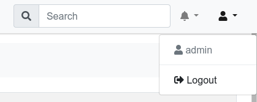
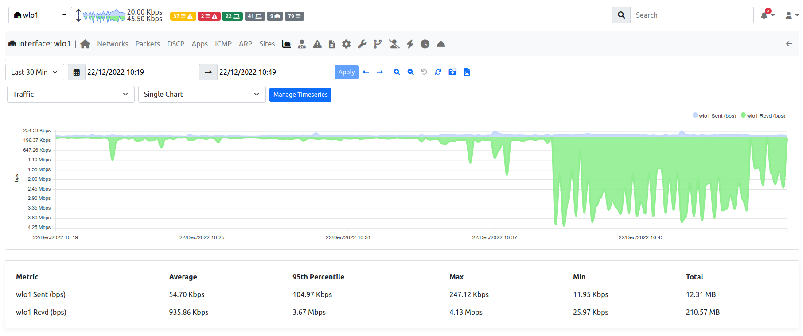
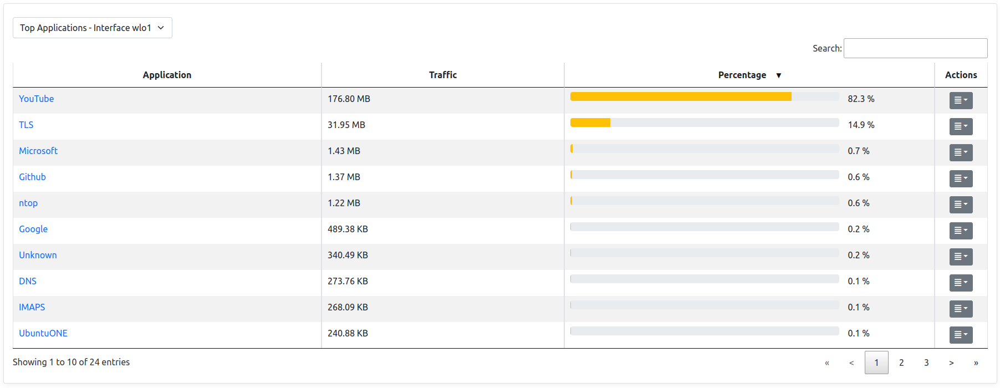

Other Pages and Info
Administration

This section shows the currently logged in user along with a logout button to disconnect the user from the ntopng GUI.
The notifications bell shows news from the ntop blog.
Search

The Search Box
The Search button at the top right of the header bar (or Ctrl+F on any page) opens the search box. While typing, the results are listed in groups, with the searched text highlighted:
Menu pages: the entries of the menu, grouped by menu section (all of them while the search box is empty). A page that is not available (missing license, preference or data) is greyed out with a lock icon whose tooltip explains why.
Preferences: the preferences that can be switched on or off, up to 8, those whose name starts with the searched text first.
Hosts, MACs, networks & more: hosts (by IP address or name), MAC addresses, local networks, Autonomous Systems, SNMP devices and interfaces, and the assets of the Assets Inventory. The icons on the left tell the type of the result, the badges add details such as the interface where the host was found, IPv6 or Inactive. The icons on the right open the alerts and, with ClickHouse, the historical flows of the host. When nothing matches exactly, a shortcut looks for the searched text in the historical flows.
The up and down arrows move through the results, Enter opens the selected one and Esc closes the search box.
Clicking a preference (or pressing Enter on it) switches it on or off at once, without leaving the current page. Preferences that cannot be changed (missing license, value set from the command line, or a setting that depends on another one which is off) are shown greyed out with a lock icon whose tooltip explains why. Preferences are listed only to users allowed to change them, and only while the Search Preferences toggle (on by default) is enabled.
Search Preferences
The slider icon next to the search field shows the Search Preferences (also in Settings → Preferences → User Interface), which choose what the search looks up. A change is saved at once and the results are refreshed:
Search In All Interfaces: looks for hosts on all the interfaces, not only on the selected one. Off by default; always on in the Overview (see Light View).
Search Hosts, Search Networks, Search Autonomous Systems: on by default.
Search SNMP: on by default, requires an Enterprise M license.
Search Historical Flows: on by default, requires ClickHouse.
Search Assets: off by default, as it queries the assets database at every search. Requires an Enterprise M license.
Search Preferences: lists the preferences in the results, on by default.
Users not allowed to change the preferences see them read-only.
Historical Charts
ntopng provides historical views on the recorded timeseries data .

Historical Charts
From the top left dropdown it’s possible to select the timeseries data to display. Other than the actual timeseries data, the chart will also show:
A comparison series with the past. In the picture above, 30m ago will show the interface traffic 30 minutes ago.
The average line, a straight line outlining the average value for the timeseries.
95th percentile, a straight line outlining the 95th percentile value of the traffic. It indicates the value for which 95% of the timeseries points are below it.
By using the time selectors is possible to specify a specific time frame to graph. It is also possible the predefined resolutions to display the latest data for predefined intervals, e.g. latest 5 or 30 minutes. By clicking on -30 and +30 buttons is also possible to jump to the corresponding interval in the past or future.
Timeseries data is shown on the charts is sampled. In order to get more accurate data is necessary to zoom into the chart. This can be performed easily by dragging the mouse on the specified interval; chart will update dynamically and show the interval data with higher resolution. A double click on the chart performs a zoom out.
By clicking on the icon it’s possible to get a permanent link to the current view to share
with others. If traffic recording is enabled, by clicking the  icon it’s possible to
download a PCAP file of the interface or host traffic in the specified time frame. Depending on the selected
historical timeseries, this could be available or not.
icon it’s possible to
download a PCAP file of the interface or host traffic in the specified time frame. Depending on the selected
historical timeseries, this could be available or not.
By clicking on the  icon it’s possible to Snapshots.
icon it’s possible to Snapshots.
Storage Monitor
According to the configuration, ntopng stores different types of information to disk, including:
Timeseries (e.g. RRD)
Packet Dumps (Traffic Recording)
Flows
The amount of resources in terms of disk space can vary a lot according to the configured data retention for each component, the number of hosts and flows. Monitoring the space used by ntopng on disk becomes crucial to make sure you are now exceeding the expected amount of resources, and check that the automatic space reclaim facilities in ntopng have been configured properly.
The Runtime Status page of the System Interface in ntopng shows the current Storage Utilization, providing the total disk space in use, and a breakdown with the disk space used by ntopng to for storing information for each interface.

The Runtime Status Page
By clicking on an interface, you get redirected to the Interface Status page. In this page you can see the total disk space used for the current interface, and a breakdown with the amount of space used for each component (Timeseries, Packet Dumps, Flows).

The Interface Status Page
From the Interface Status page we can easily check if some component is using more space than expected. At this point we can move to the configuration page for that specific component, and review the data retention settings. For example, going to the Traffic Recording page, we can see what is the actual disk utilization, checking the disk space used for Packet Dumps, and we can review the configured Max Disk Space based on the amount of resources that we want to reserve for this component.

The Interface Traffic Recording Page
Tabular View
Under the timeseries charts there is a tabular view which shows historical data for the specified timeframe in a tabular format.

Historical Tabular View
By clicking on the dropdown on the left it’s possible to select the specific data to view. Currently, the following views are implemented:
Top Protocols: the top protocols traffic and the percentage of each protocol on the total traffic.
Top Categories: the top categories traffic and the percentage of each category on the total traffic.
Top Senders: the top local sender hosts and their traffic.
Top Receivers: the top local receiver hosts and their traffic.
Top Interfaces: the top interfaces of a SNMP device.
Error Page
When a page cannot be shown, ntopng opens an error page instead. The page shows:
The error code (e.g. Error 404) and what went wrong.
What you can do to fix it.
The address of the page you tried to open.
These are the possible errors:
The requested page cannot be found (404): the address is wrong or the page does not exist in this ntopng version. Check the address.
Forbidden page (403): your user is not allowed to open the page. Ask an administrator to change your user permissions.
Professional/Enterprise edition license required and Enterprise edition license required (403): the page is part of an ntopng edition you do not have. See Available Versions & Licensing to know which edition you need.
The URL specified contains invalid/dangerous characters (400): the address contains characters that ntopng refuses for security reasons. Remove them and try again.
Internal server error (500): ntopng could not build the page. Try again later; if the problem persists, check the ntopng log.
Unable to serve requests at this time (503): ntopng is starting up or shutting down. Wait a few seconds, then reload the page.
Click Go Back to return to the page you came from, or Home to open the ntopng dashboard.